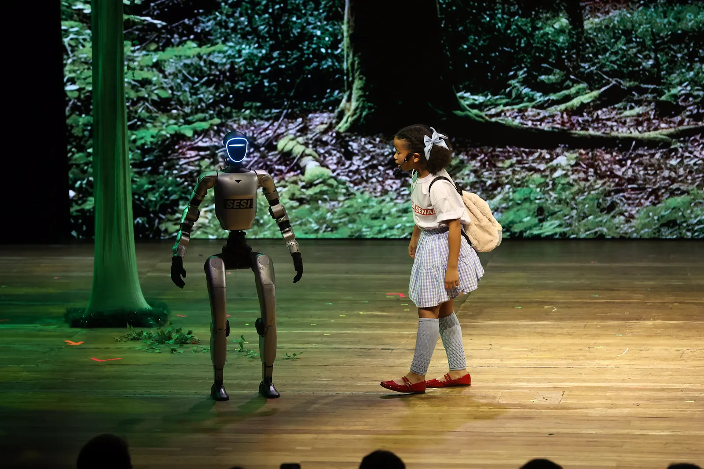
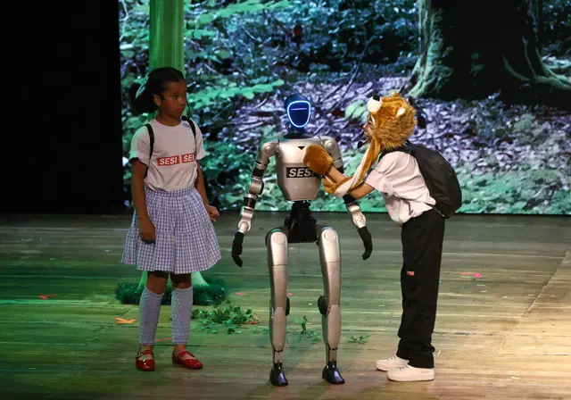
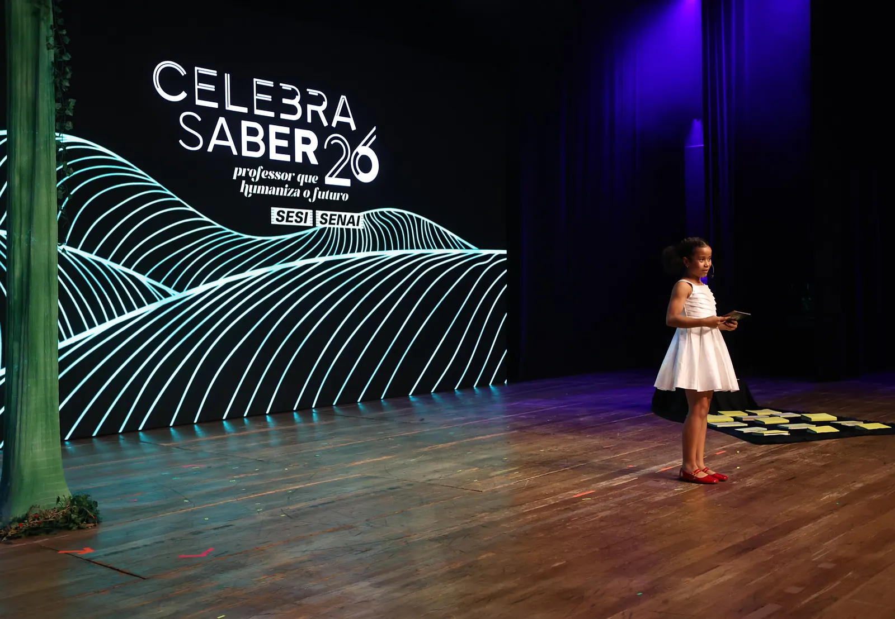

Celebra Saber26
Professor que humaniza o futuro
Uma celebração de quem acolhe, inspira e transforma a educação todos os dias.

A celebração
Ensinar é também acolher, inspirar e transformar.
O Celebra Saber 26 reconhece quem faz a educação acontecer: professores que escutam, compartilham conhecimento e abrem caminhos para outras pessoas.
No palco, a tecnologia e a inovação aparecem a serviço do encontro. Porque o futuro que importa é o que se constrói com gente, em sala de aula e fora dela.

Momentos
Pessoas e momentos que fazem a educação acontecer.
Vídeos
Reviva essa celebração.
Dois registros para guardar e compartilhar os momentos do Celebra.
Momentos do evento

Professor que humaniza o futuro
O futuro ganha sentido quando a educação coloca as pessoas no centro.